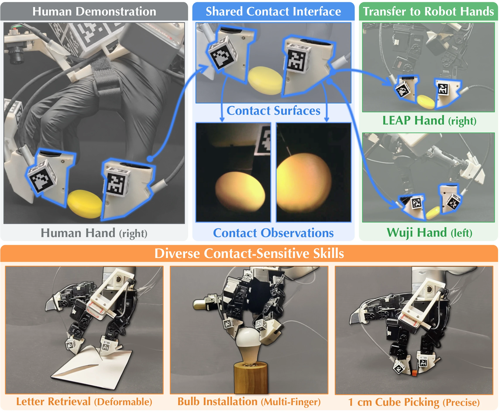
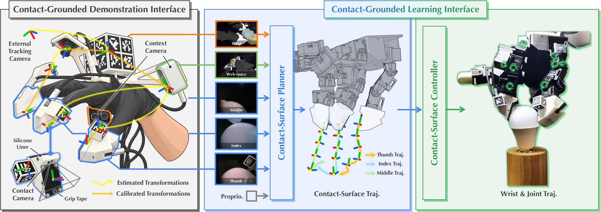
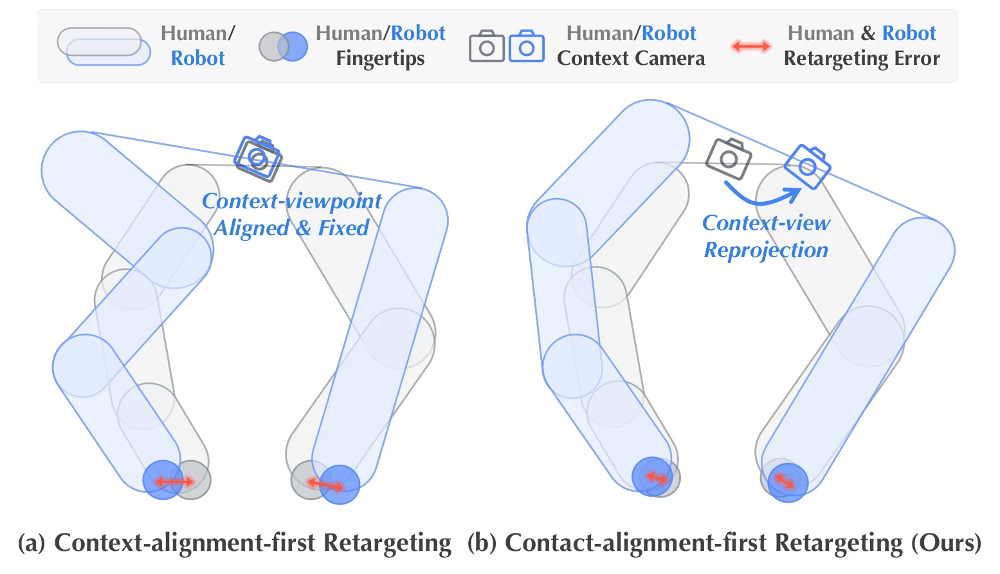
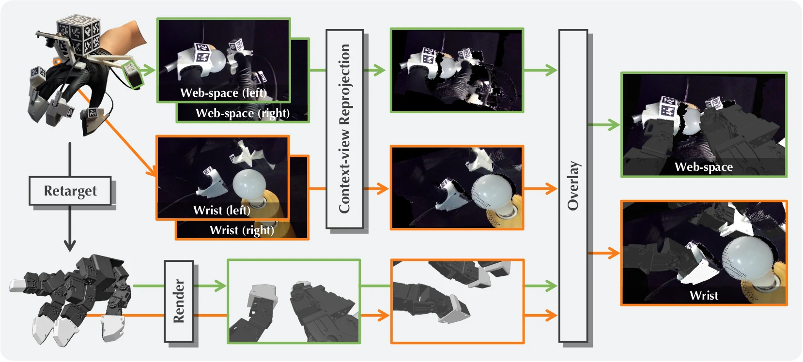
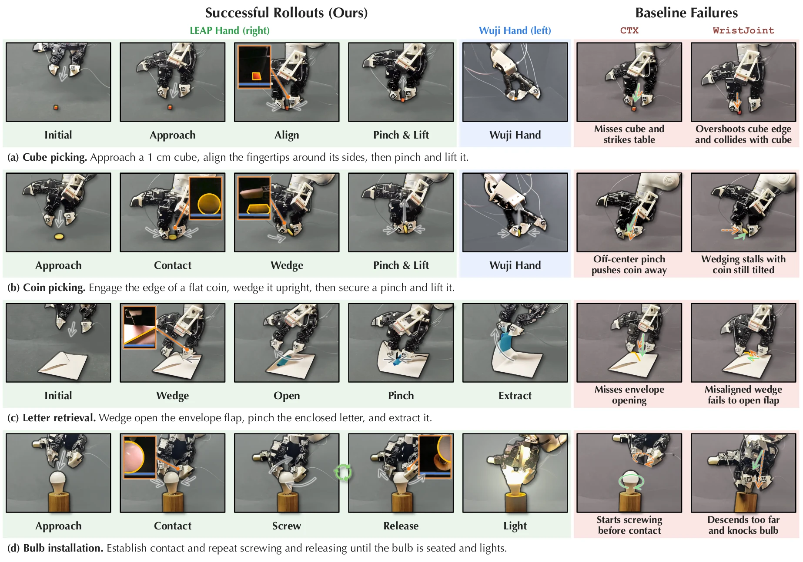
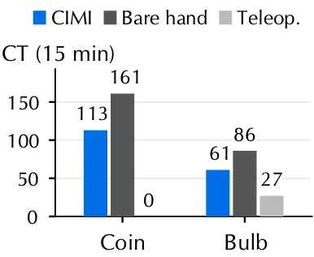

Shared contact geometry
Human and robot fingertip modules use matching surfaces and camera placement.
Contact-grounded robot learning
Transferring Dexterous Skills by Showing How Contact Unfolds
Anonymous project page · under review
The idea
Human and robot hands differ in kinematics, but they can share the geometry, viewpoint, and motion of the surfaces that touch the object.

Human and robot fingertip modules use matching surfaces and camera placement.
Retargeting prioritizes the contact motion, then corrects the wider camera views.
A planner predicts how surfaces should move; a controller coordinates wrist and fingers.
Contact-grounded interface
Matching contact surfaces and cameras preserve local interaction cues while wider context views keep the whole task visible.

Three fingertip contact cameras, four context views, and tracking views form nine synchronized streams at 10 Hz.
Printed fiducials and visual pose estimation recover the demonstrated contact-surface trajectories.
Wrist and finger motion are optimized together to align surface position and orientation.
Contact views are retained; wider views are transformed to match the robot’s retargeted viewpoint.
Contact transfer
Fixing the wrist to match a context camera can leave fingertips misaligned. CIMI frees the wrist to reproduce contact, then reprojects scene observations to the robot cameras.
Retargeting priority

View conversion

0.51 mmcoin contact-corner error
1.09 mmbulb contact-corner error
90%bulb lighting success after alignment
Contact-grounded learning
The learning interface separates what the fingertips should do from how a particular robot should move to do it.
A flow-matching policy predicts a 16-step relative trajectory for every controlled contact surface.
A reusable controller converts the plan into coordinated wrist poses and finger-joint targets.
The policy executes half the chunk, observes the latest interaction, and plans again.
Real-world evaluation
Across six hand–task pairs and 20 rollouts per method, CIMI improves final-stage success on every task.

The same cube and coin recordings train separate policies for LEAP and Wuji.
Adding contact cameras raises CIMI from 1.7% to 80.8% mean success.
Surface planning adds 50.0 percentage points over direct wrist–joint prediction.
Collection efficiency
In fixed 15-minute sessions, CIMI preserves most of bare-hand speed while collecting demonstrations that transfer to robot execution.

Teleoperation produced no successful coin demonstrations in the timed protocol; CIMI collected 113.
Paper
Robot-free human demonstrations offer a promising route to scaling dexterous manipulation data. The key challenge is to preserve the demonstrator’s natural dexterity while producing contact-grounded observations and actions that transfer to robot hands. We present Contact Imitation Interface (CIMI), a framework with contact-grounded demonstration and learning interfaces. The demonstration interface combines shared contact geometry and fingertip RGB views with contact-alignment-first retargeting and reprojection of wider scene views. The learning interface introduces a hierarchical policy in which a contact-surface planner predicts relative contact-surface trajectories and a controller coordinates wrist and finger commands to improve contact alignment. CIMI combines contact-grounded observations, retargeting, and action representations, improving mean final-stage success by at least 50 percentage points over baseline policies across six hand–task pairs on LEAP and Wuji. Both the hardware designs and software will be publicly available.
Available now
Hardware and fabrication details, implementation settings, and policy camera inputs. The paper, code, and citation will follow after review.